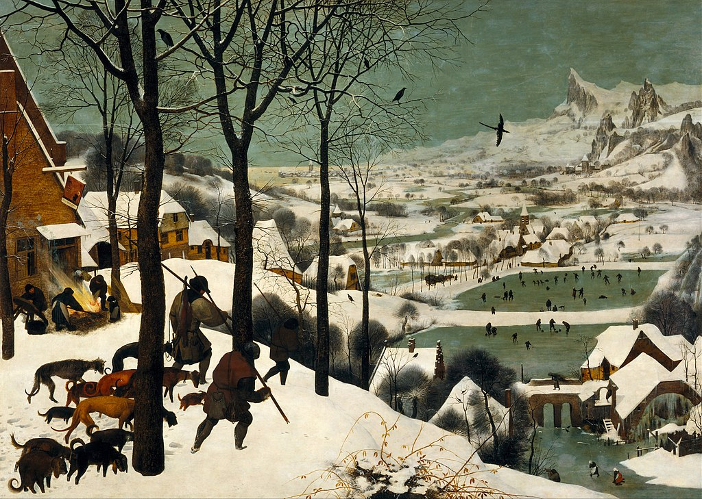

<head>
<meta charset="UTF-8" />
<meta name="keywords" content="drawing, painting" />
<meta name="description" content="drawings by Sunjy" />
<title>Sunjy</title>
<link rel="shortcut icon" type="image/x-icon" href="../../mImages/mCommon/favicon.ico" media="screen" />
<link rel="stylesheet" type="text/css" href="../../mCsses/mCommon/mCssA.css" />
<link rel="stylesheet" type="text/css" href="../../mCsses/mCommon/mCssB.css" />
<link rel="stylesheet" type="text/css" href="../../mCsses/mCommon/mCssC.css" />
<link rel="stylesheet" type="text/css" href="../../mCsses/mCommon/mCssD.css" />
<link rel="stylesheet" type="text/css" href="../../mCsses/mContent/mCssA.css" />
<link rel="stylesheet" type="text/css" href="../../mCsses/mContent/mCssB.css" />
<link rel="stylesheet" type="text/css" href="../../mCsses/mContent/mCssC.css" />
<link rel="stylesheet" type="text/css" href="../../mCsses/mContent/mCssD.css" />
</head>
<script type="text/javascript" src="../../mScripts/mContent/mContentAA.js" /></script>
<script type="text/javascript" src="../../mScripts/mContent/mContentAB.js" /></script>
<script type="text/javascript" src="../../mScripts/mContent/mContentAC.js" /></script>
<script type="text/javascript" src="../../mScripts/mContent/mContentAD.js" /></script>
<script type="text/javascript"></script> 
<script type="text/javascript">
document.write('<div class="mImgAbsolute"></div>');
/*
document.write('<p class="mFontSizeBColor" />From a white paper...</p>');
document.write('<table class="center"><tr><td>');
document.write('');
document.write('</td></tr></table>');
*/
</script>


<script type="text/javascript">
document.write('<p class="mFontSizeBColor" />The Hunters in the Snow</p>');
document.write('<p class="mFontSizeSColor" />“The Hunters in the Snow” by Pieter Bruegel, the Elder, shows a wintry scene in which three hunters are returning from their hunt accompanied by their dogs.<br><br>The expedition does not appear to have been successful as the hunters seem to trudge through the snow with their heads bowed. The dogs similarly appear downtrodden and miserable. One man carries the small corpse of a fox, to highlight the scarcity of the hunt.<br><br>In front of one of the hunters in the snow are the footprints of a rabbit that has long gone.<br><br>The overall impression is one of a cold and overcast winter’s day. The colors are muted whites, browns and greys, the trees are bare of leaves, and wood smoke hangs in the air.<br><br>On the left, several adults and a child are preparing food at an inn with an outside fire. The landscape consists of a flat-bottomed valley with a river meandering through it and with jagged peaks visible on the far side.<br><br>On the bottom right, the watermill has its wheel frozen. In the midground, figures are ice skating and playing games.<br><br>“The Hunters in the Snow” is a 1565 oil-on-wood painting, which is just one of a series of works that depict different times of the year.<br><br>As in many of Bruegel’s paintings, the focus of the series is on peasants and their work through the season of the year. The pictures show the activities representative of 16th-century northern European rural life.<br><br>Numerous details have been carefully added to create a sense of distance; these include the remote town and mountains.<br></p>');
document.write('<table class="center" /><tr><td>');
document.write('<br>The expedition does not appear to have been successful as the hunters seem to trudge through the snow with their heads bowed. The dogs similarly appear downtrodden and miserable. One man carries the small corpse of a fox, to highlight the scarcity of the hunt.<br><br>In front of one of the hunters in the snow are the footprints of a rabbit that has long gone.<br><br>The overall impression is one of a cold and overcast winter’s day. The colors are muted whites, browns and greys, the trees are bare of leaves, and wood smoke hangs in the air.<br><br>On the left, several adults and a child are preparing food at an inn with an outside fire. The landscape consists of a flat-bottomed valley with a river meandering through it and with jagged peaks visible on the far side.<br><br>On the bottom right, the watermill has its wheel frozen. In the midground, figures are ice skating and playing games.<br><br>“The Hunters in the Snow” is a 1565 oil-on-wood painting, which is just one of a series of works that depict different times of the year.<br><br>As in many of Bruegel’s paintings, the focus of the series is on peasants and their work through the season of the year. The pictures show the activities representative of 16th-century northern European rural life.<br><br>Numerous details have been carefully added to create a sense of distance; these include the remote town and mountains.<br>" />');
document.write('</td></tr></table>');
</script>


